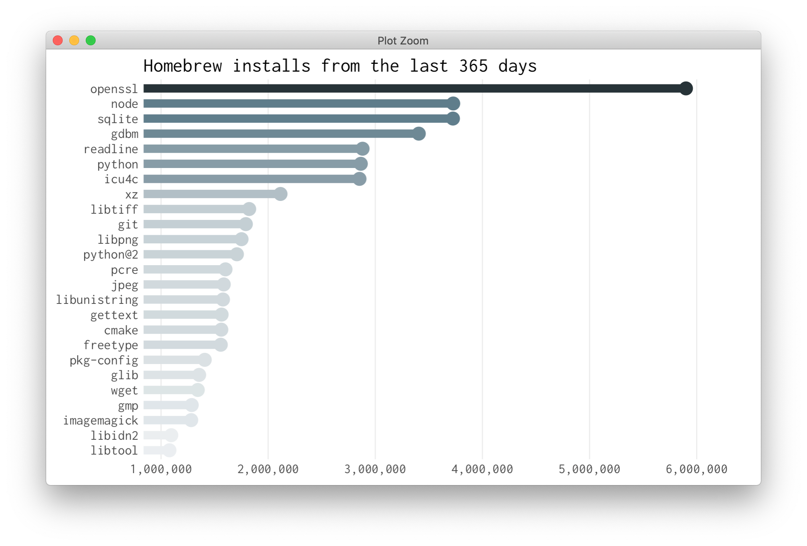

The goal of brewr is to access Homebrews JSON API in R.

Installation
You can install brewr from github using devtools with:
Example
Use the brewr() function to access all API endpoints. The endpoints are listed in the documentation.
The first argument of brewr() is the endpoint. Note that the leading slash must be included as well.
library(brewr)
library(dplyr)
library(jsonlite)
# Pull metrics on macOS versions
os_versions <- brewr("/analytics/os-version/30d")
# Default output is JSON
class(os_versions)
#> [1] "json"
# Convert JSON to an R object with jsonlite
os_versions %>%
fromJSON() %>%
.$items
#> number os_version count percent
#> 1 1 macOS Mojave (10.14) 7,585,214 54.95
#> 2 2 macOS High Sierra (10.13) 4,598,532 33.32
#> 3 3 macOS Sierra (10.12) 1,026,510 7.44
#> 4 4 OS X El Capitan (10.11) 443,932 3.22
#> 5 5 OS X Yosemite (10.10) 128,562 0.93
#> 6 6 OS X Mavericks (10.9) 18,023 0.13
#> 7 7 macOS (10.15) 1,045 0.01
#> 8 8 Mac OS X Lion (10.7) 588 0.00
#> 9 9 OS X Mountain Lion (10.8) 256 0.00
#> 10 10 Mac OS X Snow Leopard (10.6) 94 0.00
# Pull install metrics from the last 30 days
brewr("/analytics/install/30d") %>%
fromJSON() %>%
.$items %>%
head(10)
#> number formula count percent
#> 1 1 sqlite 430,296 3.13
#> 2 2 openssl 420,016 3.05
#> 3 3 gdbm 419,986 3.05
#> 4 4 python 345,637 2.51
#> 5 5 node 320,123 2.33
#> 6 6 readline 272,149 1.98
#> 7 7 xz 206,569 1.50
#> 8 8 icu4c 189,192 1.38
#> 9 9 libtiff 188,799 1.37
#> 10 10 gettext 171,245 1.24Links
- Browse source code at
https://github.com/tyluRp/brewr - Report a bug at
https://github.com/tyluRp/brewr/issues
License
- Full license
- MIT + file LICENSE
Developers
- Tyler Littlefield
Author, maintainer